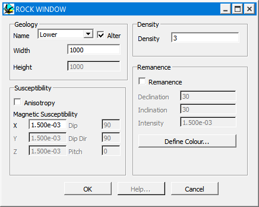

Rock properties
This window can be accessed from the Stratigraphy Definition Window or when defining an event that generates new lithologies (dykes, plugs, unconformities). Within this window you can define the name, alteration properties, geophysical properties and thickness of a given lithology.
Stratigraphic Thicknesses
For stratigraphically defined units (ie the base stratigraphy and unconformities, and not dykes or plugs), the thickness of the unit is defined as follows:
a) The top-most unit extends infinitely upwards in the positive Z direction, and the base of this unit is defined by the Height parameter.
b) Middle units are defined by their Width (thickness).
c) The lowest unit extends down (in the negative Z direction) from the base of the unit above it to infinity.

| GROUP | NAME | FUNCTION |
|---|---|---|
| Geology | Name | User Selectable name, also a menu for pre-defined rock properties from the Rock Property Database (See section 2.8.4) |
| Width | Thickness of stratigraphically defined lithologies (Except topmost or lowermost unit in a sequence) | |
| Height | Level of base of topmost unit in a stratigraphically defined lithology | |
| Alter | Alows this unit’s geophysical properties to be affected by alteration haloes, if not checked the original rock propoerty values will be retained during alteration events. | |
| Susceptibility | Anisotropy | Defines susceptibility to be anisotropic |
| Magnetic Susceptibility X | Magnitude of Anisotropy in user defined units in the X direction (or for all 3 directions if Anisotropy is not checked) | |
| Magnetic Susceptibility Y | Magnitude of Anisotropy in user defined units in the Y direction (only if Anisotropy is checked) | |
| Magnetic Susceptibility Z | Magnitude of Anisotropy in user defined units in the Z direction (only if Anisotropy is checked) | |
| Dip | Dip of XY plane of Anisotropy | |
| Dip Direction | Dip Direction of XY plane of Anisotropy | |
| Pitch | Pitch of X direction in XY plane of Anisotropy | |
| Density | Density | Density of lithology |
| Remanence | Remanence | Defines a remanent component of magnetisation |
| Declination | Declination of remanent vector | |
| Inclination | Inclination of remanent vector | |
| Intensity | Intensity of remanent vector | |
| Define Colour | Allows colour of unit to be altered | |
Noddy · open source under the MIT licence · Loop3D/noddy_qt